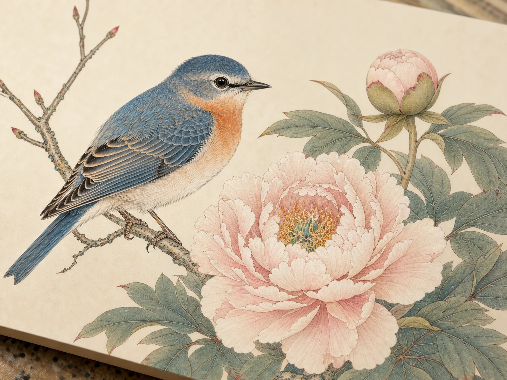

工笔画是怎么把细节画出来的？
How Does Gongbi Painting Create So Much Detail?
Page 1
孔雀的脚画错了？
The Peacock’s Foot
一个画师把画好的孔雀送到皇帝面前。羽毛漂亮，颜色也漂亮，孔雀正抬脚往高处走。皇帝却一直盯着一个很小的地方：脚。
有一个流传很久的故事说，Sòng Huīzōng · 北宋皇帝赵佶，擅长书画，也很重视宫廷画院。曾经批评宫廷画师，因为他们没有仔细观察孔雀往高处走时，究竟先迈哪只脚。对宋徽宗来说，会画一只“像孔雀的鸟”还不够。
你得真的去看孔雀。它怎么迈步？只抬起一只脚的时候，身体怎么站稳？尾巴又会跟着怎样动？
这个故事的每个细节到底是不是真的，我们今天已经无法确定。不过它一直被人讲下来，是因为它特别像宋徽宗。这个皇帝，看画真的看得很仔细，而他喜欢的画，也正好有这种特点。
A painter brings a picture of a peacock to the emperor. The feathers are beautiful. The colors are rich. The bird is stepping upward. But the emperor keeps looking at one tiny part: the foot.
A famous old story says that Sòng Huīzōng · 宋徽宗 · A Northern Song emperor known for painting, calligraphy, and support of the court painting academy. of the Sòng cháo · 宋朝 · The Chinese dynasty that lasted from 960 to 1279. once criticized court painters because they had not noticed which foot a peacock lifted first when climbing. To Huizong, painting a peacock was not enough. A painter had to watch a real peacock.
How did it step? How did it balance on one leg? What happened to the tail when the body moved?
We cannot know every detail of this old story for certain. But people kept telling it because it fit Huizong perfectly. This was an emperor who expected painters to look very closely. And that helps explain the kind of painting he loved.
Page 2
工笔画到底长什么样？
What Does a Gongbi Painting Look Like?

Fine lines and layered color carefully describe feathers, petals, and claws, showing the detailed approach of gongbi painting.
看一幅精细的gōngbǐ huà · 用细致线条和层层设色完成的中国画法。花鸟画，然后慢慢走近。画面不会变得模糊，反而会冒出越来越多东西。鸟身上，一根根细线把不同的羽毛分开；翅膀的边缘顺着身体弯过去。花朵不是一团粉红色，前面的花瓣压住后面的花瓣。叶子有正面，也有翻过去的背面。连鸟爪抓住树枝的样子，都画得很清楚。
这种细密、非常讲究控制的画法，就叫工笔。工笔画很重要的特点，是线条细而清楚。画家先把形状交代明白，再慢慢加颜色。颜色也常常不是浓浓地一下涂满，而是一层一层染上去，让羽毛有前后，让花瓣能转过去，让颜色从深到浅慢慢变化。
所以工笔画有一种很特别的感觉：它好像把时间放慢了。画家的笔很慢，因为他的眼睛已经先看了很久。宋徽宗的gōngtíng huàyuàn · 朝廷设立、由宫廷画师工作的绘画机构。特别看重这种观察。一只鸟不能只是“画得像鸟”。最好让你觉得：它下一秒真的可能会动。
Look at a carefully painted bird from this tradition, then move closer. The picture does not fall apart. You begin to see more. A thin line separates one feather from another. The edge of a wing curves neatly around the body. On a flower, one petal slips behind the next instead of becoming a lump of color. Leaves have fronts and backs. A bird’s feet actually seem to grip the branch.
This careful style is called gōngbǐ huà · 工笔画 · A detailed Chinese painting style built with precise lines and carefully layered color., which means meticulous or highly controlled brushwork. The lines are usually fine and deliberate. Color can be built up gradually in thin layers instead of being brushed on in one heavy coat. Darker and lighter areas help feathers overlap and petals turn. Even small shapes are carefully placed.
That does not mean every gongbi painting must look exactly the same. But compared with a loose, quickly brushed painting, gongbi often feels as if the artist has slowed everything down. The brush moves carefully because the painter has already spent a long time looking. Huizong’s gōngtíng huàyuàn · 宫廷画院 · An imperial institution where court painters worked and trained. valued this kind of close observation. A bird could not simply look “bird-like.” It had to feel like a particular bird that might move at any moment.
Page 3
鸟眼睛里的一小滴漆
One Drop in a Bird’s Eye
宋徽宗自己也画鸟。他的《翠竹双雀图》里，两只小鸟停在竹枝旁。羽毛一层压着一层，身体也不是平平地贴在绢上，而是有轻重、有方向。
可是里面最让人记得住的细节，可能只有这么一点：鸟的眼睛上，点了一小滴qī · 一种可以涂在物体表面、干后变硬并产生光泽的材料。。漆会反光。小小的一点亮光，让鸟眼睛突然显得湿润、明亮，好像它刚刚发现有人正在看它。这也正是工笔有意思的地方。细线和颜色可以慢慢把一只鸟做出来，可画家真正想解决的问题不是：“我还能再多画几根羽毛吗？”而是：怎么让它活起来？
宋徽宗的画院甚至会拿诗句来考画师。画家不但要认真观察真正的鸟和花，还得想办法把一句诗里的感觉变成一幅画。所以，眼睛要看得细，脑子也得会想。
Huizong painted birds himself. In a work called Finches and Bamboo, two little birds perch among bamboo and branches. Their feathers are carefully shaped and shaded. Their bodies have weight; they do not look pasted onto the silk.
But one of the smallest details is also one of the most memorable. Huizong added a tiny drop of dark qī · 漆 · A coating material that hardens and can form a glossy surface. to each bird’s eye. The lacquer catches the light. Suddenly, the eyes seem wet and bright, as if the birds have just noticed you. That tiny trick says a lot about gongbi painting. Many fine lines and layers of color may build the bird, but the painter is always asking a bigger question: What will make it feel alive?
That was important at Huizong’s painting academy. He wanted artists to observe nature carefully, but he also gave them lines of poetry to turn into paintings. So accuracy was only part of the job. A painter needed sharp eyes—and imagination.
Page 4
一个画画很厉害的皇帝
The Emperor Who Was Better at Art
宋徽宗生活在大约九百年前。他会画画、写shūfǎ · 用毛笔等工具书写汉字的艺术。、收藏艺术品，也非常重视宫廷里的画师。可是当皇帝，他的结局很糟。1127年，北宋都城被攻破，宋徽宗被俘到北方，后来死在囚禁之中。
他的宫廷消失了，可这种细密的画法没有消失。后来的画家仍然用细线、层层颜色和仔细观察去画花、鸟、人物和动物。直到今天，还是有人画工笔。
所以，“孔雀先迈哪只脚”的故事，不只是一个挑剔皇帝的趣事，它也很像工笔画本身。远远看，你看到一只鸟。走近一点，你看到羽毛。再靠近一点，也许才发现鸟爪怎么抓住树枝，一片叶子怎样翻过去，或者眼睛里那一小点亮光。
工笔画很适合越走越近地看，而宋徽宗，大概就是那个总想再靠近一点的人。
Huizong lived about nine hundred years ago. He was a talented painter, calligrapher, collector, and powerful supporter of court artists. As an emperor, however, his story ended badly. In 1127, enemies captured the Northern Song capital. Huizong was taken north as a prisoner and later died in captivity.
His court disappeared. The careful kind of painting it encouraged did not. Painters in later dynasties continued using fine outlines, controlled colors, and close observation to paint flowers, birds, people, and animals. Gongbi is still practiced today.
That is why the old story about the peacock’s foot is more than a funny tale about a picky emperor. It explains something about this kind of painting. From across the room, you see a bird. Come closer, and you notice the feathers. Closer still, you see how one foot grips the branch, how a leaf turns over, or how one tiny drop makes an eye shine.
Gongbi rewards the person who keeps looking. Huizong certainly did.